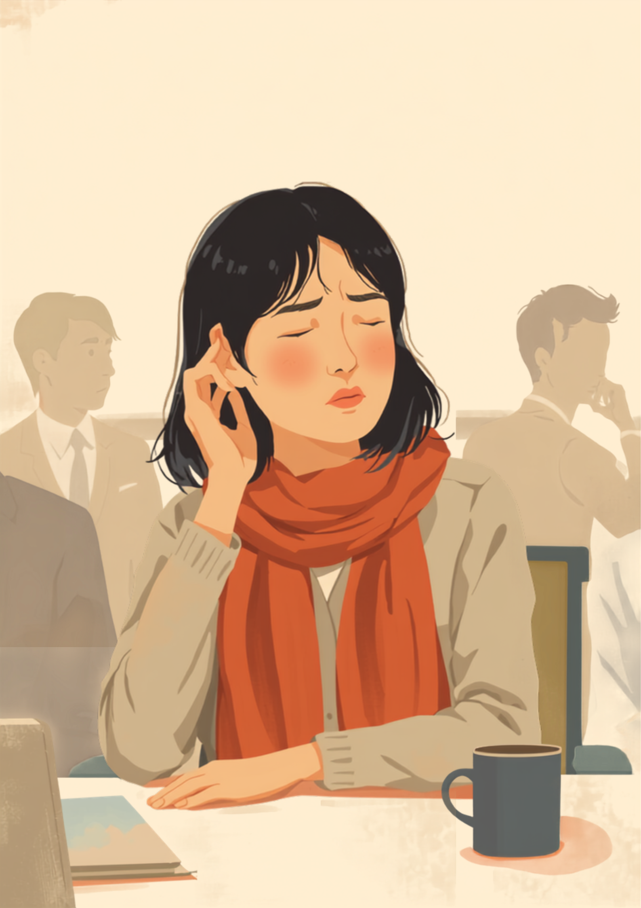

メニエール病の回転性めまいは、多くの場合ほとんど前触れなくやってきます。自分や周りの景色がぐるぐる回っているような感覚に襲われ、立っていることすら難しくなることもあるとされています。厄介なのは、その様子が周りからは「ふらついている」「様子がおかしい」としか見えないことです。何も知らない人からすれば、それは体調不良というより、単に酔っているように映ってしまうこともあります。この記事では、メニエール病のある方が仕事の中で抱えやすい「めまいへの怯え」と「誤解されるつらさ」、その場でできる対処、職場への伝え方を当事者の声をもとに整理しました（2026年8月時点の情報です）。
PR



会議の途中、耳の奥がふさがるような感覚がして、指先が冷たくなっていく
「え、大丈夫?」の前に来る、耳の詰まり感というサイン

メニエール病は内耳の中のリンパ液が増えすぎることで起こるとされ、回転性のめまいに加えて、耳鳴りや難聴、耳の詰まり感を伴うことが多い病気です。多くの場合、発作の前に何らかのサインが出ると言われています。ミミ
就労支援の現場で関わってきた中で、メニエール病のある方から聞くのは「発作そのものより、いつ来るか分からない怖さがつらい」という言葉です。回転性めまいは数十分から数時間続くこともあるとされ、来てしまえばその場に留まって耐えるしかない場面が多いようです。だからこそ、多くの方が「耳の詰まり感」や「圧迫感」といった前兆に敏感になり、常にどこかで自分の耳の状態を気にしながら仕事をしているといいます。
前兆に気づけたとしても、会議の最中や電話対応の途中では、すぐに動くわけにもいきません。「今ここで発作が来たらどうしよう」という不安を抱えたまま、平静を装って仕事を続ける時間そのものが、大きな消耗につながっているようです。
!
メニエール病の症状の現れ方や前兆の感じ方には個人差があります。この記事で挙げる内容がそのまま当てはまるとは限らないため、体調に不安がある場合は自己判断せず主治医に相談することをお勧めします。
「正直言うと、最初の半年くらいは自分の体に何が起きてるのか分からなくて、ただただ怖かったです。会議中に急に耳が詰まった感じがして、あ、来る、と思った瞬間にはもう景色がぐるぐる回ってて、机に突っ伏すみたいな体勢になってました。周りは何も知らないから最初はぽかんとしてて、後から『具合悪いなら早く言ってよ、酔っ払いみたいだったよ』って言われて、笑いながら言われたんですけど、地味に傷つきました。」
40代・女性（メニエール病・事務職）
相談の一コマ
相談者
めまいが起きるたびに、周りから変な目で見られてる気がして、それが一番つらいんです。病気だって分かってもらえない感じがして。

ミミ
回転性めまいは、外から見ると「ふらついている」としか分からない症状なんです。周りが悪気なく誤解してしまうのは、ある意味当然のことだと思います。
相談者
当然、なんですね。私がちゃんと説明できてないだけだと思ってました。
ミミ
全部を説明する必要はありません。「めまいの持病があって、時々ふらつくことがある」という一言だけでも先に伝えておくと、いざという時の見え方がだいぶ変わりますよ。次の章で、その場での対処も一緒に見ていきましょう。
会議中にめまいが来たら、その場でできること
回転性めまいの発作が来てしまったとき、無理に立ち上がったり歩いて移動しようとすると、かえって転倒などの危険が増すことがあるとされています。まずは今いる場所で安全を確保することを優先し、可能であれば早めに一言断って席を外す、という順番で考えると動きやすいようです。
i
めまいの感じ方や発作の強さには個人差があります。ここで紹介する対処法がそのまま当てはまるとは限らないため、実際の対応は主治医の指示を優先してください。
会議中など、その場を離れにくい状況では、視線を一点に固定することが少し楽になる場合があるようです。目を動かすと回転している感覚が強まりやすいため、資料の一点やテーブルの木目など、動かないものをじっと見つめておく、という工夫をしている方もいます。
「めちゃくちゃ意味不明な行動してたと思うんですけど、電車の中で耳が詰まる感じがしてきた瞬間、とにかく次の駅で降りることしか考えられなくなって、降りたホームでしばらくうずくまってました。それが月に2回くらいのペースで半年近く続いて、遅刻の理由をどう説明すればいいのか本当に悩みました。『寝坊しました』の方がまだ楽なんじゃないかって、一瞬本気で考えたこともあります。」
20代・男性（メニエール病・営業職）
「酔ってるんじゃ」という誤解と、伝えづらさとの付き合い方
回転性めまいの発作中、体は必死にバランスを取ろうとしているため、傍目にはふらついているようにしか見えません。何も知らない人がそれを見れば、お酒でも飲んだのだろうかと受け取ってしまうことがあっても、無理のないことだと思います。ただ、本人からすれば、体調不良を誤解されるつらさに加えて、疑われているような気まずさまで抱えることになり、二重にしんどい状況です。
全部ではなく、必要な場面だけ伝えるという考え方
診断名や病気の仕組みまで詳しく説明する必要はありません。業務に関わる場面に絞って、あらかじめ簡潔に伝えておく方法が、本人にとっても職場にとっても負担が少ないとされています。
- 「めまいの持病があり、時々ふらつくことがあります」
- 「発作が来たら、その場で少し座らせてください」
- 「無理に声をかけず、落ち着くまでそっとしておいてもらえると助かります」
- 「回復には数分から数十分かかることがあります」
「酔っているように見える」という誤解は、事前に一言伝えておくだけでかなり防げることがあります。伝えるタイミングは、発作が起きてからより、落ち着いているときの方が話しやすいという声もよく聞きます。ミミ
誰にどこまで伝えるかは、本人が選んでよいことです。まずは信頼できる上司や、近くの席の同僚一人にだけ共有しておき、必要に応じて少しずつ広げていく、という進め方をとっている方もいるようです。
使える制度と、一人で抱えないための相談先
身体障害者手帳という選択肢
メニエール病の症状として難聴や耳鳴りが続く場合、聴覚障害や平衡機能障害として身体障害者手帳の対象になることがあるとされています。対象になるかどうかや等級は症状の程度によって異なるため、詳しくは主治医や自治体の障害福祉窓口に確認するのが確実です（2026年8月時点の情報です）。手帳を取得すると、障害者雇用枠での就職や、企業側の合理的配慮を前提にした働き方を選びやすくなる場合があります。
相談できる窓口
- 主治医・耳鼻咽喉科（発作の記録や、働き方についての意見書の相談）
- 職場に選任されている産業医（50人以上の事業場に選任義務あり）
- 自治体の障害福祉窓口、身体障害者手帳の相談窓口
- 就労移行支援事業所（体調管理を含めた就労準備や職場との調整）
メニエール病の症状の現れ方や、必要な配慮の内容には個人差があります。この記事の内容がそのまま当てはまるとは限らないため、実際の判断は主治医・支援者・自治体の窓口とよく相談しながら進めることをお勧めします（2026年8月時点の情報です）。
「酔っているように見える」という誤解は、本人のせいではありません。それでも、先に一言伝えておくことは、自分を守るための小さな備えになります。
よくある質問
Q. メニエール病でも障害者手帳は取れますか？
メニエール病の症状として難聴やめまいが続く場合、聴覚障害や平衡機能障害として身体障害者手帳の対象になることがあるとされています。等級や対象になるかどうかは症状の程度によって異なるため、詳しくは主治医や自治体の障害福祉窓口にご確認ください（2026年8月時点の情報です）。
Q. 会議中にめまいの前兆を感じたら、その場でどうすればいいですか？
無理に立ち上がったり歩いたりせず、机や椅子に手を添えて視線を一点に固定すると、その場をやり過ごしやすくなる場合があります。可能であれば早めに一言断って席を外し、静かな場所で座って休むことが助けになるとされています。
Q. 「酔っているのでは」と誤解されるのがつらいときは？
回転性めまいの症状は外から見ると分かりにくく、ふらつく様子だけが伝わってしまうことがあります。すべてを説明しようとせず、「めまいの持病があり、時々ふらつくことがある」という一言だけでも先に伝えておくと、誤解を防ぎやすくなる場合があります。
Q. メニエール病で仕事を休む期間の目安はありますか？
症状の重さや経過には個人差がありますが、一般的にはめまい発作が続く時期がしばらく続いたあと、落ち着いていく経過をたどることが多いとされています。休職を検討する場合は、診断書をもとに主治医や職場と相談しながら期間の目安を決めていく形になります。
Q. 塩分やストレス管理以外に、仕事との両立でできる工夫はありますか？
睡眠時間を整えることや、疲労がたまりやすいタイミングを自分なりに把握しておくことも助けになるとされています。あわせて、発作が起きたときの対応手順をあらかじめ職場と共有しておくと、いざというときに慌てずに済む場合があります。
この4点を頭に置いておくだけで、少し気持ちが軽くなるかもしれません
PR


一人で抱え込む前に、今の気持ちを話してみませんか
「まだ迷っている」段階でも大丈夫です。mimemimeの無料相談は、今の状況の整理から一緒に始められます。
無料で話してみる
おのざる
mimemime代表。就労支援の現場経験をもとに、障がいのある方の働く不安に寄り添う記事を執筆。